Cyclist in a remote area
A bend on a hill road, a fall, nobody around. The rider is on the ground and can't reach their phone.
EU-LS, the European Life-Saving Platform, pairs an NB-IoT + NB-NTN device (terrestrial and satellite) with a multitenant IoT platform that partners offer to their own users. It detects falls and SOS calls, pinpoints the user's location and alerts the people who can help.
For ski resorts, rental companies, insurers, operators and businesses. Pilot projects now open.
People who fall are often alone, unable to make a call or unable to say where they are. The minutes lost become the real danger.
A bend on a hill road, a fall, nobody around. The rider is on the ground and can't reach their phone.
A detour off the groomed run, then an impact. Nobody saw them leave the piste and nobody knows where to look.
A deep valley, high altitude, a flat phone battery. Right when a call for help is needed, the terrestrial network doesn't reach.
EU-LS is built for the moments when a person can't call for help on their own.
The EU-LS device is NB-NTN capable: it uses the terrestrial NB-IoT network and, where coverage runs out, sends the alarm via satellite using the 3GPP NB-NTN standard. Same protocol, same platform.
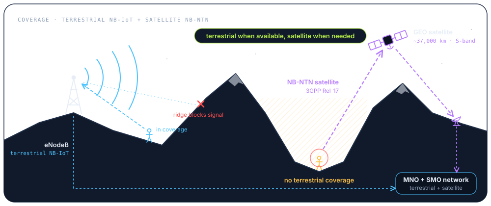
The device acts on its own and doesn't wait for the smartphone. The platform turns a signal into an incident that can be managed.
The inertial sensor recognises a fall or an unusual impact. Alternatively, the user presses the SOS button.
IMU → event: FALL_DETECTED | SOS_PRESSEDThe GNSS receiver calculates the position. Speed and last movement are added to the event.
GNSS fix · lat/lon · speed · timestampThe event is sent over terrestrial NB-IoT or, where there is no coverage, over NB-NTN via satellite. The user's phone isn't needed.
CoAP CON · DTLS · UDP 5684 · JSONThe CoAP Gateway confirms receipt with an ACK; the platform applies the tenant and use-case rules and opens an incident.
ACK 2.04 · rule engine (tenant) → incident OPENNotifications reach the App, emergency contacts and the control room. Everyone sees the same location.
notify → app · contacts · dashboardThe operator follows the live map and checks the history. Once the rescue is complete, they close the incident.
incident: OPEN → IN_PROGRESS → CLOSEDDigital Bear supplies the device, the platform and the APIs. The partner offers the service under its own brand, with its own rules and its own dashboard. The end user gets protection, the App and SOS.
A multitenant platform that already works, built on solid open-source components and designed for millions of small messages, from the UDP packet to the partner's API.
← scroll the diagram →
On NB-IoT, and even more so over satellite, every byte costs bandwidth, energy and money. Today EU-LS sends JSON over CoAP/DTLS/UDP on both the terrestrial network and NTN. That alone cuts traffic compared with HTTPS, and turns a connectionless UDP transport into delivery confirmed by the platform. In phase 2, the move to CBOR will shrink the payload further.
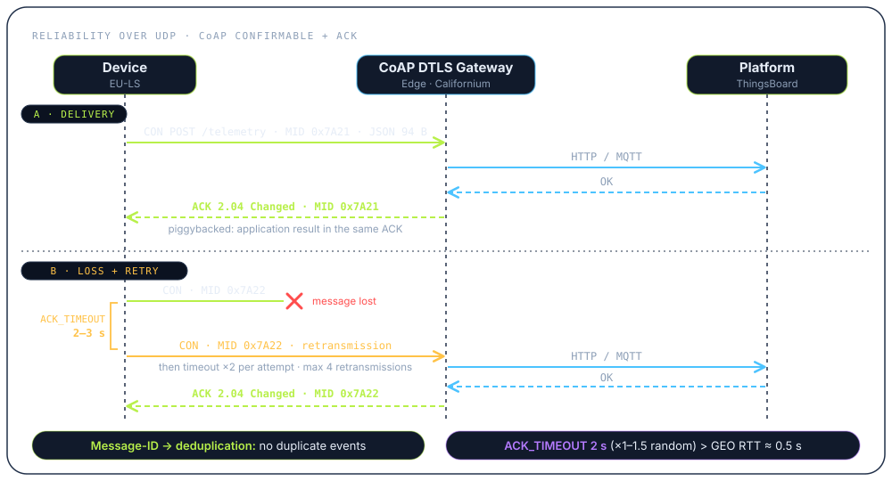
The switch from JSON to CBOR (binary payload) is not yet implemented. It will be enabled once packet size starts to weigh on NTN link costs or to cause fragmentation. The gateway is already designed to validate both formats, so the change stays confined to the device and the gateway.
Example based on a fall event (id, type, lat/lon, speed, battery, timestamp). Network bytes over IPv4: indicative estimate, handshakes excluded. CoAP timers: RFC 7252 / Eclipse Californium default values.
This is the working EU-LS prototype. Every component has a specific job.

Terrestrial NB-IoT and satellite NB-NTN in a single module.
Built-in antenna and multiple constellations for a reliable position.
Detects falls and impacts even if the user doesn't respond.
Shows ID, session, signal and satellite fix at a glance.
A quick, physical way to call for help.
Confirm that the alarm has been sent and show the device status.
Keeps a local event log, useful for later analysis.
Power and charging through a standard connector.
The 3GPP roadmap is bringing satellite connectivity to smartphones. Once NTN phones are widespread and the cost of the satellite link is no longer a barrier, the phone will be able to replace the device. The EU-LS platform will already be ready and integrated.
NB-IoT + NB-NTN device and LTE/NR smartphones, both integrated with the platform and dashboard.
NB-IoT + NB-NTN device, LTE/NR smartphones and the first LTE/NR + NTN smartphones, all on the same platform.
LTE/NR + NTN + 6G smartphones integrated with the platform and dashboard. A dedicated device is no longer needed.
Split of value between device and platform (70/30 → 100): Digital Bear strategic vision.
From 70% device + 30% platform to 100% platform. Without dedicated hardware, the costs of the physical asset disappear, while the tenants, data, rules and integrations built up over time remain.
The device, network and platform stay the same. What changes for each use case is the rules, the dashboard and the user experience.
Device ID SB_XXXXX
Ski resorts and skiers
EU-LS is not an avalanche transceiver and does not replace avalanche search equipment.
Have a different scenario in mind? Let's talk.
The control room has the full picture. The user and their contacts know what is happening.
Screens are for illustration only; the actual interfaces are in development.
A summary of the current prototype. Some values are still being validated.
| Connectivity | Terrestrial NB-IoT + satellite NB-NTN (3GPP Rel-17, GEO, S-band) · SIMCom SIM7070G HP-S module |
|---|---|
| Protocol | CoAP over DTLS / UDP 5684 · JSON payload (CBOR in phase 2) · Confirmable messages with ACK · ACK_TIMEOUT 2 s, max 4 retransmissions |
| GNSS | Quectel L86 · multi-constellation · built-in patch antenna |
| Sensors | Inertial sensor (accelerometer / IMU) for falls and impacts |
| Interface | Colour TFT display · physical buttons (SOS / function) |
| Alarms | Automatic (fall/impact) and manual (SOS) · buzzer and status LEDs |
| Storage | microSD slot for local logging |
| Power | USB-C (power and charging) · battery [TBC] |
| Battery life | [TBC] |
| Ingress protection | [TBC] |
| Edge | Eclipse Californium + Scandium · anti-DDoS · rate limiting · load balancer · CoAP DTLS Gateway (PSK / X.509) |
| Core | ThingsBoard CE + PostgreSQL · rule engine · dashboards · multitenant |
| Integration | NBI with REST API · HTTP REST / MQTT · LTE/NR smartphone App |
Specifications refer to the prototype and may change in the production version.
Do you run a ski resort, a rental company, an insurance company, a mobile network or a business with lone workers? We'll set up your tenant and build a pilot project with you.
We'll come back to you with a concrete proposal.